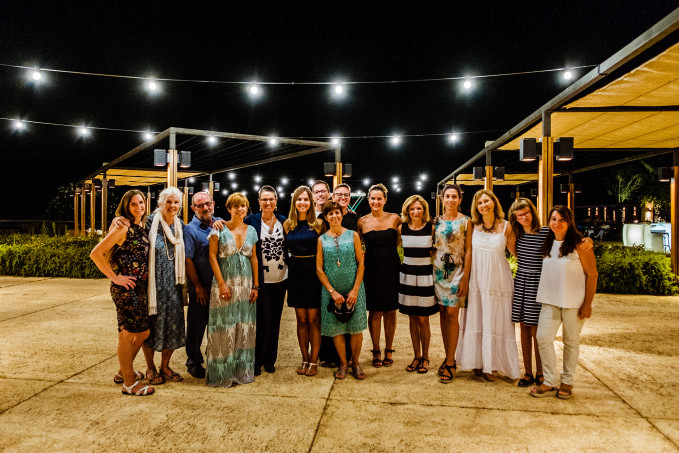

Benvingut a la web en construcció de l'Associació Nava Jeevan Mallorca.
Davant la pèrdua d'un ésser estimat, ens envaeix una mescla d'emocions i sentiments que sacsegen completament la nostra vida: ràbia, negació, impotència, tristesa, enyorança...
Sembla que el món s'atura, que perds el control de la teva vida i el dia a dia es fa molt costa amunt.
Transitar el camí en grup ens permet compartir emocions i vivències amb persones que es troben a la mateixa situació, ser compresos i escoltats.
L'acompanyament durant tot el recorregut, el faran especialistes en dol de l'associació Nava Jeevan, fins que es completi el procés i es restableixi l'equilibri
Per més informació ens podeu telefonar o enviar un e-mail.
Ante la pérdida de un ser querido, nos invade una mezcla de emociones y sentimientos que sacuden completamente nuestra vida: rabia, negación, impotencia, tristeza y añoranza...
Parece que el mundo se para, que pierdes el control de tu vida y el día a día se have muy cuesta arriba.
Transitar el camino en grupo nos permite compartir emociones y vivencias con personas que se encuentran en la misma situación, ser comprendidos y escuchados.
El acompañamiento durante todo el recorrido lo harán especialistas en duelo de la associación Nava Jeevan, hasta que se complete el proceso y se reestablezca el equilibrio.
Para más información nos podéis llamar por teléfono o enviar un e-mail.